The History of Real Madrid CF
1981-1990
The 80s were dominated by a brilliant generation of youth-team players. ‘Vulture's Cohort’, led by Emilio Butragueño, made Real Madrid into one of the best teams in history. The goals of Hugo Sánchez also played an important role in this successful decade. The Whites won the first two UEFA Cups with some historic comebacks in Europe and magical nights in the Bernabéu.
In 1983, Castilla was crowned champion of the Segunda División under the orders of Amancio and with some stunning performances from five players: Pardeza, Sanchís, Míchel, Martín Vázquez and Butragueño. These gems from the academy were a real discovery and Di Stéfano did not hesitate to prepare them for the first team. The group made its breakthrough in 1985, winning five consecutive La Ligas and setting important records, such as the competition's top goal-scorer with 107.
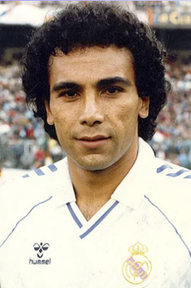Mexican striker Hugo Sánchez had a lot to do with this success. Together with veterans Juanito, Valdano and Santillana, he formed a 'Cohort' that was close to perfection. In his seven seasons in white he scored 251 goals, and was the league's top goal-scorer in four of them. His famous front-flip celebrations are burned into the retinas of Madrid fans.
In this decade Real Madrid also won its first UEFA title. It came in the 1984-85 season, in a two-legged final where they beat Videoton, a little-known team who had knocked out PSG, Partizán Belgrade and Manchester United. In the following campaign, the Whites successfully defended their title thanks to an unbelievable comeback. After losing the first leg 5-1 to Borussia Mönchengladbach, they won an epic tie in the return match with two goals from Valdano and another brace from Santillana to reach the quarters (4-0).
A historical Liga
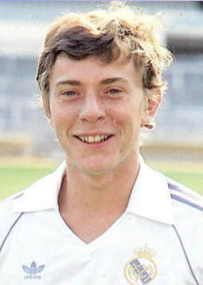The 1986-87 season of the league was the longest in history, as the traditional two-match system underwent changes and a playoff match was added. Butragueño's creativity, a solid defence, Buyo's consistency between the sticks and Hugo Sánchez's goals gave Real Madrid the title with one match to spare. The Mexican player was chosen by the first-division players as the season's best footballer and he was the championship's top goal-scorer with 34.
Victory in ‘the match of silence’
The draw for the first round of the European Cup in the 1987-88 season threw up a clash between Madrid and a Napoli that included Maradona. The Whites were forced to play the first-leg match at home and behind closed doors. Beenhakker took the opportunity to prepare in match conditions and Real Madrid played two games in the Santiago Bernabéu against a Castilla side wearing the colours of the Italian team. These practice runs paid off and the Madrid side beat Napoli in ‘the match of silence’ (2-0). In the absence of the fans, the club put up flags and banners and the members of the board left their box to cheer on the team from the sidelines.
The decade's best team in Europe
Despite not winning a European Cup in the 80s, the Whites still gave people something to talk about in the Old Continent and the magazine France Football called Real Madrid the best European team of the decade. Alfredo Di Stéfano was presented with the Super Ballon d'Or as the best player of the last 30 years.
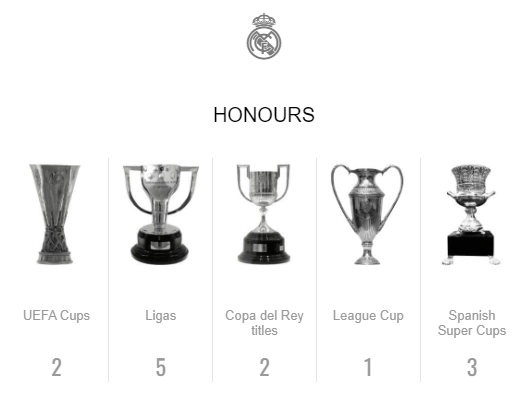1991-2000
Jorge Valdano, Fabio Capello and Vicente del Bosque were the names to remember this decade. The three successful coaches took Real Madrid to the top in La Liga and in Europe and they were helped on their way by some superstars. Players such as Redondo, Laudrup, Seedorf, Suker, Mijatovic and Roberto Carlos all arrived at the club in the 90s.
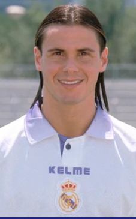 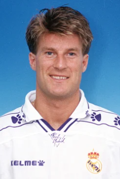Having demonstrated his abilities at the helm of Tenerife, where his team played an attractive and efficient brand of football, Valdano returned to Real Madrid in 1994. With new signings Redondo, Laudrup, Amavisca and Cañizares, the Madrid side went on to win the league title. That same season, youth-academy player Raúl made his debut. On the 29th of October at 17 years of age, the young player from Madrid filled in for Martín Vázquez in La Romareda, where he would put in a stunning performance. A new legend was born.
Early in 1995, Valdano's Real Madrid beat Johan Cruyff's Barça 5-0 in the Santiago Bernabéu. It was a magical game that was televised and followed by more than 10 million viewers. But the bad results in the 95-96 season forced Lorenzo Sanz to bring in Fabio Capello, one of the most sought-after coaches in European football. The Italian had a dream squad. The signings of Seedorf, Suker, Mijatovic and Roberto Carlos, together with Raúl, Hierro and Redondo, took Madrid to a new league title.
The 20th of May 1998 was a historic day for the club. After 32 years, and under the orders of Jupp Heynckes, Real Madrid conquered Europe once more by beating Juventus in the final of the Champions League. A goal from Pedja Mijatovic in the 66th minute brought number Seven from the Amsterdam Arena to the Santiago Bernabéu trophy room. In December that year, this time at the hands of Guus Hiddink, Madrid won its second Intercontinental Cup.

In 1999, and after a lifetime connected to the club as a player, Vicente del Bosque returned as the first-team manager. The man from Salamanca managed to instil a philosophy in the team that made them the best in the continent. His first title came in 2000: the Eighth European Cup. In the same year, Florentino Pérez (enlazar ficha) took over the presidency and signed one of the best players on the planet, Luis Figo
Adios Juanito, a Real Madrid legend

On the 2nd of April 1992, a tragic traffic accident cut short the life of Juanito, a Madrid idol. The player from Malaga had been at the UEFA Cup match between Real Madrid and Torino in the Santiago Bernabéu. He was on his way back to Mérida, where he was the manager, when the sad event took place. Madrid's siete was always well-loved in the Whites' stadium, and he is the inspiration behind the song "Illa, illa, illa, Juanito Maravilla", which is sung in the seventh minute of every match.
An end to the Dutch teams' unbeaten record in Europe
In the 1991-1992 UEFA Cup, Real Madrid brought an end to a Dutch tradition. Their teams had not been beaten at home in European competition for more than a decade. The Whites beat Utrecht away (1-3), with an own goal from Roest and one each for Prosinecki and Villarroya.
The best club in history
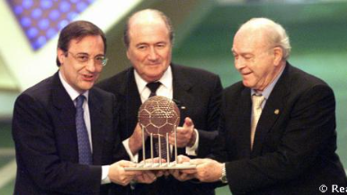The club's more than fifty titles led FIFA to name Real Madrid the ‘Best Club in History’ in 1998. Di Stéfano and Puskas were chosen among the best ten players. Roberto Carlos, Raúl, Suker and Mijatovic were also given accolades as the 18 standout players of 1997. After winning another European Cup in 2000, Real Madrid was chosen as the ‘Best Club of the Twentieth Century’.
Di Stéfano, honorary president
After more than twelve years serving the club as a player and a coach, Alfredo Di Stéfano was named honorary president of Real Madrid in 2000. The decision was made during the first session held by the new Board of Directors headed by Florentino Pérez. It was approved by the Delegate Members General Assembly on the 5th of November.
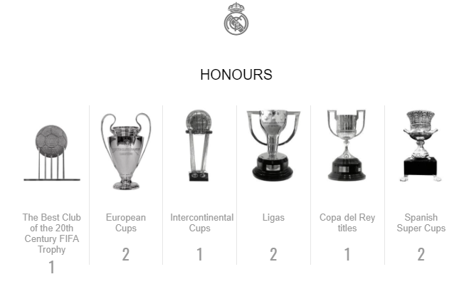2001-2010
In this decade Real Madrid made a proud return to triumph on the continent, winning its Ninth European Cup and its third Intercontinental Cup as well as five Ligas, among other titles. Also, Florentino Pérez reorganised the club's economy to make it the richest on the planet.
Vicente del Bosque stayed on as manager until 2003. His philosophy and brand of football made Madrid into a team of champions. During his time at the helm, the Whites celebrated another European Cup victory, another Intercontinental Cup, two domestic championships, a Supercup of Spain and a UEFA Super Cup. It was an era that is only comparable with the Real Madrid of the 50s and 60s.
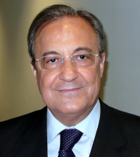Florentino Pérez's management led to profound changes in the club's structure. He reorganised the institution's economy, making it the richest club in the world, and made far-reaching changes at the top of the organisation. He completely renovated the Santiago Bernabéu, created a new sports complex in Valdebebas and opened the Alfredo Di Stéfano stadium. Meanwhile, on the pitch, he made the fans' dreams come true by bringing in Zidane, Ronaldo and Beckham.
In his second spell (2006), the president continued to delight the supporters, signing the best players and managers in the world. Great players such as Cristiano Ronaldo and Benzemá among others, were brought in, along with manager José Mourinho. The Portuguese arrived in the Santiago Bernabéu a week after being crowned champions of Europe with Inter Milan in the same stadium.
A historical one hundred
On March the 6th 2002, Real Madrid celebrated its 100th birthday. Fans enjoyed an intense and emotional year with a number of commemorative events organised by the club. King Juan Carlos was the honorary president of the occasion, which was conceived to project an image of a universal club, in line with its great history. The icing on the cake came at the end of the season with the team winning the Ninth European Cup, the third Intercontinental Cup and its first UEFA Super Cup.
Two consecutive leagues
In the 2006-07 season, Fabio Capello returned to Real Madrid and his knack for winning rubbed off on the team once more as they won the club's thirtieth league title. It was a triumph whose roots lay in the match on the 18th of March 2007. After the momentous game against Barcelona (3-3), the team underwent a significant change. In the last 12 matches the team won ten, drew one and lost one. In the 2007-08 season the club was victorious once more. The Madrid side made its intentions clear from the start, leading from matchday two.
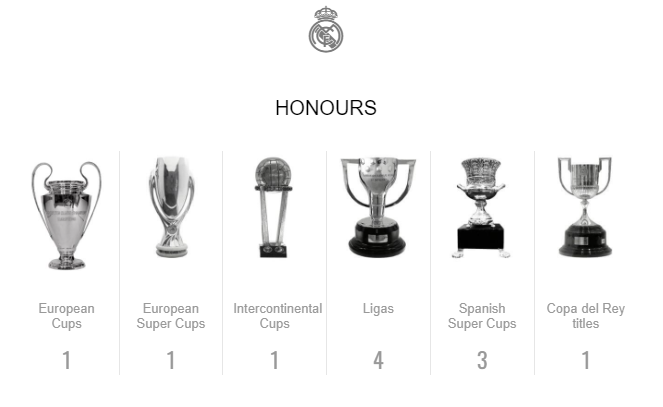2011-2020
Real Madrid have once again defined an era in world football, winning four European Cups and four Club World Cup. In 2014, they lifted La Décima, before winning the Club World Cup that same year. Zidane's first two seasons in the dugout were historic, clinching La Undécima and La Duodécima. What's more, 2017 became a record-breaking year when the team got their hands on five trophies: The European Cup, the Club World Cup, LaLiga and the European and Spanish Super Cups. La Decimotercera then came in 2018, when they came out on top against Liverpool in Kiev.
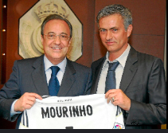In the first few years of this new decade three trophies were added to the cabinet by José Mourinho's Real Madrid. The most notable was the 2011-12 Liga title, which they won with a record-breaking 100 points, the highest score achieved in the history of the championship at that stage, and 121 goals. They also beat Barcelona to clinch a Copa del Rey and a Supercopa de España.

In June 2013, Carlo Ancelotti arrived at Real Madrid. The Italian won four trophies with the Whites, the first coming in the shape of Real Madrid's nineteenth Copa del Rey, after beating Barcelona 1-2 in the final. On 24 May 2014, Madrid lifted the European Cup once again, claiming La Décima with a 4-1 victory over Atlético in Lisbon. Goals from Ramos, Bale, Marcelo and Cristiano secured the triumph.
Two further triumphs arrived in the second season under Ancelotti: The European Super Cup, against Sevilla and Real Madrid’s first World Club Cup, against San Lorenzo. This meant Real Madrid capped of a historic year in their history in 2014, making it the year in which most trophies were won by the club. In June 2015, Rafa Benítez returned to the club where he cut his teeth, to take charge of the Whites. Then, in January 2016, Zidane made the step up to first team coach, following his legendary career as a player. His first season ended with the team lifting the La Undécima trophy, against Atlético in Milán.
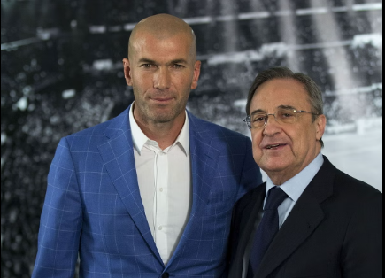The French tactician's second season in charge delivered a clutch of silverware. Real Madrid secured the Duodécima, becoming the first-ever team to successfully defend their continental crown in the Champions League era. Alongside this success in Europe's elite club competition, the team also captured the 2016/17 LaLiga crown, the club's third UEFA Super Cup and a second Club World Cup, after overcoming Manchester United, as well as a 10th Spanish Super Cup. In December 2017, the Whites clinched another Club World Cup crown and this fifth piece of silverware saw the team set a new record for the number of titles claimed in a calendar year.
The year 2018 is also part of the madridista legacy thanks to the club's Decimotercera, secured against Liverpool following victory in the showpiece in Kiev, whilst that year also yielded the club's seventh world club crown, won in the United Arab Emirates against Al Ain. Meanwhile, 2020 got up and running with an 11th Spanish Super Cup, which came on the back of victory over Atlético Madrid in Jeddah (Saudi Arabia). In July, Zinedine Zidane's men captured the club's 34th league crown.
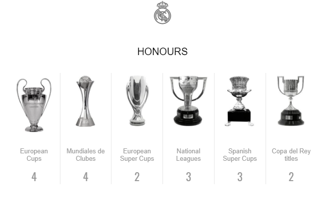2021-2024
In 2024, Real Madrid wrote a new chapter in the history of football by winning the European Cup for the 15th time. The team strengthened its dominance in this competition against Borussia Dortmund in London. Before that, the club had already celebrated another historic milestone in 2022 by winning the European Cup for the 14th time, in Paris against Liverpool. The early part of this decade also saw them win the League title for the 35th and 36th time, the fifth and sixth European Super Cups, the eighth Club World Cup, the 20th Copa del Rey and two more Spanish Super Cups.
Real Madrid won their 14th European Cup with Ancelotti at the helm. In his second spell in charge, the Italian coach won the continental trophy once again in 2022 by beating Liverpool in Paris. That was the crowning glory of a spectacular 2021/22 season in which two further trophies were clinched: the 12th Spanish Super Cup, with victory over Athletic in the final, and the 35th LaLiga title.
At the start of the 2022/23 season, further success followed with victory in the European Super Cup against Eintracht Frankfurt. In February 2023, our team clinched the Club World Cup for the eighth time with a win over Al Hilal in the final in Rabat. Ancelotti's side secured their third trophy of the season in May, beating Osasuna in the final of the Copa del Rey.
An excellent 2023/24 season was rounded off by winning La Decimoquinta. Our team edged Borussia Dortmund in the final at Wembley, ending the campaign undefeated. Ancelotti's men had previously clinched their 36th LaLiga title and beaten Barcelona in the final of their 13th Spanish Super Cup. That success carried over into the start of the 2024/25 campaign, where Real Madrid won the European Super Cup for the sixth time after beating Atalanta in the final to become the most successful team in the competition.
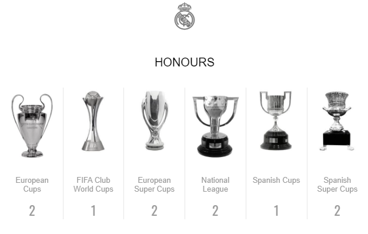
1 2 3
Credit: RealMadrid.com